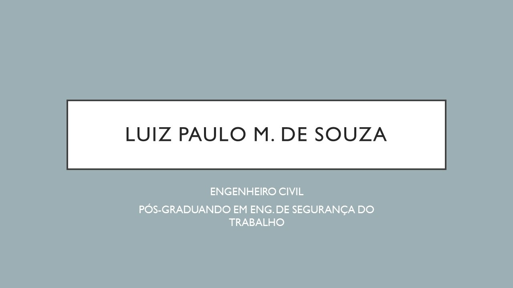

 Experiência Profissional
Experiência Profissional
- Engenheiro civil na Rosa Acorsi Engenharia - Abril de 2018 - Julho de 2019 (1 ano e 6 meses)
- Telefone: (67) 3351-4000;
- Referência: Jânia Acorsi (Proprietária);
- Cidade: Campo Grande / MS;
- Resumo das Atividades Prestadas:Execução de obras públicas como escola, CEINF, rede de esgoto, estação de tratamento de águas e quadra esportiva. Além do acompanhamento da obra, realizava compras de materiais e orçamentos, execução de planilhas de medição e projetos básicos.
- Engenheiro civil- Prestador de Serviços - Setembro de 2016 -presente
- Site da Empresa: https://gessocampogrande.blogspot.com.br/
- Cidade:Campo Grande/ MS;
- Resumo das Atividades Prestadas: Engenheiro civil empreiteiro com foco em prospecção de clientes, elaboração de orçamentos, compra de materiais e mobilização de mão de obra para execução de serviços em drywall.
- Engenheiro civil na Igreja Universal do Reino de Deus - Fevereiro de 2015 - Agosto de 2016 (1 ano 7 meses)
- Site da Empresa: https://www.universal.org/
- Telefone: (67) 3303-2500;
- Referência: Flávia Garcett (Responsável pelo RH);
- Cidade: Campo Grande / MS;
- Resumo das Atividades Prestadas: Análise de viabilidade técnica para aplicação de projetos de reforma, manutenção e construção nas instalações prediais da instituição. Elaboração de orçamentos em diversas áreas, incluindo o preparo de escopos, relatórios, memorial descritivo, fiscalização e medição in loco. Responsável pela equipe de manutenção predial, incluindo as principais facilities do prédio. Por fim, realizava vistorias técnicas em imóveis, logística de veículos, lançamentos de notas fiscais e gestão de contratos no sistema ERP da empresa.
- Engenheiro civil no Sistema FIEMS - Julho de 2014 - Janeiro de 2015 (7 meses)
- Site da Empresa: http://www.fiems.com.br/
- Telefone: (67) 3389-9000;
- Referência: Julio (Coordenador de Engenharia);
- Cidade: Três Lagoas/ MS;
- Resumo das Atividades Prestadas: Responsável pela a fiscalização na construção da escola do SESI (total de 15.000 m²) e ampliação da estrutura do SENAI, na cidade de Três Lagoas/ MS, incluindo medições mensais, preparo de relatórios fotográficos e intermediação entre construtoras e FIEMS.
- Engenheiro Civil na Rosa Acorsi Engenharia Ltda - Fevereiro de 2013 - Abril de 2014 (1 ano 2 meses)
- Telefone: (67) 3351-4000;
- Referência: Jânia Acorsi (Engenheira Proprietária);
- Cidade: Campo Grande/ MS;
- Resumo das Atividades Prestadas: Acompanhamento de obras públicas e participação em licitações. Elaboração e controle de planilhas de medição e relatórios em geral. Execução de projetos em geral. Emissão de certidões e notas fiscais.
- Auxiliar de Engenharia na Rosa Acorsi Engenharia Ltda - Outubro de 2012 - Fevereiro de 2013 (5 meses)
- Telefone: (67) 3351-4000;
- Referência: Jânia Acorsi (Engenheira Proprietária);
- Cidade: Campo Grande/ MS;
- Resumo das Atividades Prestadas: Acompanhamento de obras no interior do estado e na capital, envolvendo a construção de casas populares do governo do estado.
- Auxiliar Técnico na MRW Engenharia Ltda - Fevereiro de 2011 - Agosto de 2011 (7 meses)
- Telefone: (67) 3027-6116;
- Referência: Wilson (Engenheiro Proprietário);
- Cidade: Campo Grande/ MS;
- Resumo das Atividades Prestadas: Acompanhamento de obras populares (residencias horizontais populares da AGEHAB), compras de materiais, gerenciamento de mão de obra, relatórios de desenvolvimento da obra, viagens para fiscalização de no interior do estado.
- Estagiário junto ao Eng. Luis Ricardo Bernhard - Outubro de 2009 - Dezembro de 2010 (1 ano 2 meses)
- Telefone: (67) 99922-7014;
- Referência: Luiz Ricardo;
- Cidade: Campo Grande/ MS;
- Resumo das Atividades Prestadas: Aprendizado em obras residenciais, comerciais e industriais, acompanhando engenheiro civil e auxiliando nas atividades relacionadas à função.